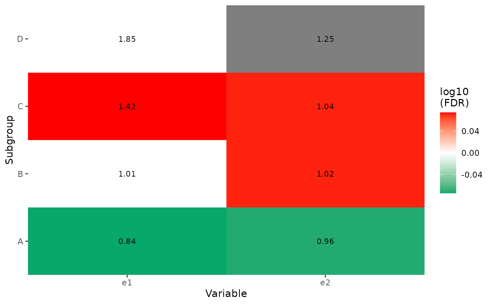
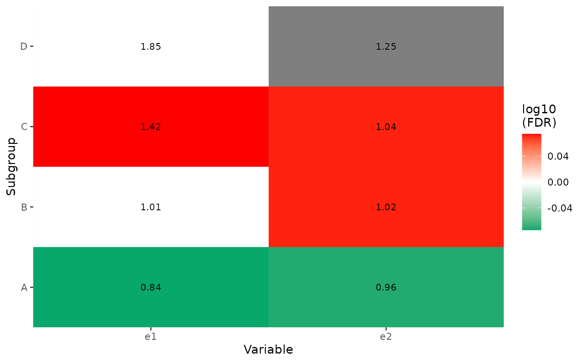

This function takes a data.frame as input, compares proportion of positive
cases or mean measure in one subgroup and the remaining samples.
group_enrichment(
df,
grp_vars = NULL,
enrich_vars = NULL,
cross = TRUE,
co_method = c("t.test", "wilcox.test"),
ref_group = NA
)Arguments
- df
a
data.frame.- grp_vars
character vector specifying group variables to split samples into subgroups (at least 2 subgroups, otherwise this variable will be skipped).
- enrich_vars
character vector specifying measure variables to be compared. If variable is not numeric, only binary cases are accepted in the form of
TRUE/FALSEorP/N(P for positive cases and N for negative cases). Of note,NAvalues set to negative cases.- cross
logical, default is
TRUE, combine all situations provided bygrp_varsandenrich_vars. For examples,c('A', 'B')andc('C', 'D')will construct 4 combinations(i.e. "AC", "AD", "BC" and "BD"). A variable can not be in bothgrp_varsandenrich_vars, such cases will be automatically drop. IfFALSE, use pairwise combinations, see section "examples" for use cases.- co_method
test method for continuous variable, default is 't.test'.
- ref_group
reference group set in
grp_vars.
Value
a data.table with following columns:
grp_var: group variable name.enrich_var: enrich variable (variable to be compared) name.grp1: the first group name, should be a member ingrp_varcolumn.grp2: the remaining samples, marked as 'Rest'.grp1_size: sample size forgrp1.grp1_pos_measure: for binary variable, it stores the proportion of positive cases ingrp1; for continuous variable, it stores mean value.grp2_size: sample size forgrp2.grp2_pos_measure: same asgrp1_pos_measurebut forgrp2.measure_observed: for binary variable, it stores odds ratio; for continuous variable, it stores scaled mean ratio.measure_tested: only for binary variable, it stores estimated odds ratio and its 95% CI fromfisher.test().p_value: for binary variable, it stores p value fromfisher.test(); for continuous variable, it stores value fromwilcox.test()ort.test().type: one of "binary" and "continuous".method: one of "fish.test", "wilcox.test" and "t.test".
See also
Examples
set.seed(1234)
df <- dplyr::tibble(
g1 = factor(abs(round(rnorm(99, 0, 1)))),
g2 = rep(LETTERS[1:4], c(50, 40, 8, 1)),
e1 = sample(c("P", "N"), 99, replace = TRUE),
e2 = rnorm(99)
)
print(str(df))
#> tibble [99 × 4] (S3: tbl_df/tbl/data.frame)
#> $ g1: Factor w/ 4 levels "0","1","2","3": 1 2 1 1 2 1 1 2 1 1 ...
#> $ g2: chr [1:99] "A" "A" "A" "A" ...
#> $ e1: chr [1:99] "N" "N" "P" "P" ...
#> $ e2: num [1:99] -0.801 1.261 1.059 -0.385 -1.716 ...
#> NULL
print(head(df))
#> # A tibble: 6 × 4
#> g1 g2 e1 e2
#> <fct> <chr> <chr> <dbl>
#> 1 0 A N -0.801
#> 2 1 A N 1.26
#> 3 0 A P 1.06
#> 4 0 A P -0.385
#> 5 1 A N -1.72
#> 6 0 A N -1.79
# Compare g1:e1, g1:e2, g2:e1 and g2:e2
x1 <- group_enrichment(df, grp_vars = c("g1", "g2"), enrich_vars = c("e1", "e2"))
#> Handing pair g1:e1
#> ============================
#> Handing pair g1:e1 - group: 0
#> Handing pair g1:e1 - group: 1
#> Handing pair g1:e1 - group: 2
#> Handing pair g1:e1 - group: 3
#> Handing pair g2:e1
#> ============================
#> Handing pair g2:e1 - group: A
#> Handing pair g2:e1 - group: B
#> Handing pair g2:e1 - group: C
#> Handing pair g2:e1 - group: D
#> Handing pair g1:e2
#> ============================
#> Handing pair g1:e2 - group: 0
#> Handing pair g1:e2 - group: 1
#> Handing pair g1:e2 - group: 2
#> Handing pair g1:e2 - group: 3
#> An error occur when testing, it will be skipped. Info:
#> not enough 'x' observations
#> Handing pair g2:e2
#> ============================
#> Handing pair g2:e2 - group: A
#> Handing pair g2:e2 - group: B
#> Handing pair g2:e2 - group: C
#> Handing pair g2:e2 - group: D
#> An error occur when testing, it will be skipped. Info:
#> not enough 'x' observations
x1
#> grp_var enrich_var grp1 grp2 grp1_size grp1_pos_measure grp2_size
#> <char> <char> <char> <char> <num> <num> <num>
#> 1: g1 e1 0 Rest 32 0.46875000 67
#> 2: g1 e1 1 Rest 54 0.57407407 45
#> 3: g1 e1 2 Rest 12 0.58333333 87
#> 4: g1 e1 3 Rest 1 1.00000000 98
#> 5: g2 e1 A Rest 50 0.50000000 49
#> 6: g2 e1 B Rest 40 0.55000000 59
#> 7: g2 e1 C Rest 8 0.75000000 91
#> 8: g2 e1 D Rest 1 1.00000000 98
#> 9: g1 e2 0 Rest 32 -0.10095792 67
#> 10: g1 e2 1 Rest 54 0.14485233 45
#> 11: g1 e2 2 Rest 12 -0.20355859 87
#> 12: g1 e2 3 Rest 1 -0.91919633 98
#> 13: g2 e2 A Rest 50 -0.03216117 49
#> 14: g2 e2 B Rest 40 0.03554310 59
#> 15: g2 e2 C Rest 8 0.10479595 91
#> 16: g2 e2 D Rest 1 0.57743977 98
#> grp2_pos_measure measure_observed measure_tested p_value type
#> <num> <num> <char> <num> <char>
#> 1: 0.582089552 0.8052885 0.636 (0.249,1.609) 0.3883298 binary
#> 2: 0.511111111 1.1231884 1.286 (0.54,3.078) 0.5500606 binary
#> 3: 0.540229885 1.0797872 1.189 (0.298,5.143) 1.0000000 binary
#> 4: 0.540816327 1.8490566 Inf (0.021,Inf) 1.0000000 binary
#> 5: 0.591836735 0.8448276 0.692 (0.289,1.643) 0.4215518 binary
#> 6: 0.542372881 1.0140625 1.031 (0.427,2.501) 1.0000000 binary
#> 7: 0.527472527 1.4218750 2.663 (0.446,28.341) 0.2856324 binary
#> 8: 0.540816327 1.8490566 Inf (0.021,Inf) 1.0000000 binary
#> 9: 0.066569050 0.9276431 <NA> 0.3803124 continuous
#> 10: -0.146501176 1.1385935 <NA> 0.1319806 continuous
#> 11: 0.042208918 0.8927214 <NA> 0.3391939 continuous
#> 12: 0.021925195 0.5855265 <NA> NA continuous
#> 13: 0.057908803 0.9609516 <NA> 0.6523714 continuous
#> 14: -0.003258494 1.0172800 <NA> 0.8484093 continuous
#> 15: 0.004297859 1.0446060 <NA> 0.7841570 continuous
#> 16: 0.006653398 1.2530787 <NA> NA continuous
#> method fdr
#> <char> <num>
#> 1: fisher.test 1.0000000
#> 2: fisher.test 1.0000000
#> 3: fisher.test 1.0000000
#> 4: fisher.test 1.0000000
#> 5: fisher.test 0.8431035
#> 6: fisher.test 1.0000000
#> 7: fisher.test 0.8431035
#> 8: fisher.test 1.0000000
#> 9: t.test 0.3803124
#> 10: t.test 0.3803124
#> 11: t.test 0.3803124
#> 12: t.test NA
#> 13: t.test 0.8484093
#> 14: t.test 0.8484093
#> 15: t.test 0.8484093
#> 16: t.test NA
# Only compare g1:e1, g2:e2
x2 <- group_enrichment(df,
grp_vars = c("g1", "g2"),
enrich_vars = c("e1", "e2"),
co_method = "wilcox.test",
cross = FALSE
)
#> Handing pair g1:e1
#> ============================
#> Handing pair g1:e1 - group: 0
#> Handing pair g1:e1 - group: 1
#> Handing pair g1:e1 - group: 2
#> Handing pair g1:e1 - group: 3
#> Handing pair g2:e2
#> ============================
#> Handing pair g2:e2 - group: A
#> Handing pair g2:e2 - group: B
#> Handing pair g2:e2 - group: C
#> Handing pair g2:e2 - group: D
x2
#> grp_var enrich_var grp1 grp2 grp1_size grp1_pos_measure grp2_size
#> <char> <char> <char> <char> <num> <num> <num>
#> 1: g1 e1 0 Rest 32 0.46875000 67
#> 2: g1 e1 1 Rest 54 0.57407407 45
#> 3: g1 e1 2 Rest 12 0.58333333 87
#> 4: g1 e1 3 Rest 1 1.00000000 98
#> 5: g2 e2 A Rest 50 -0.03216117 49
#> 6: g2 e2 B Rest 40 0.03554310 59
#> 7: g2 e2 C Rest 8 0.10479595 91
#> 8: g2 e2 D Rest 1 0.57743977 98
#> grp2_pos_measure measure_observed measure_tested p_value type
#> <num> <num> <char> <num> <char>
#> 1: 0.582089552 0.8052885 0.636 (0.249,1.609) 0.3883298 binary
#> 2: 0.511111111 1.1231884 1.286 (0.54,3.078) 0.5500606 binary
#> 3: 0.540229885 1.0797872 1.189 (0.298,5.143) 1.0000000 binary
#> 4: 0.540816327 1.8490566 Inf (0.021,Inf) 1.0000000 binary
#> 5: 0.057908803 0.9609516 <NA> 0.4188997 continuous
#> 6: -0.003258494 1.0172800 <NA> 0.5468097 continuous
#> 7: 0.004297859 1.0446060 <NA> 0.9437054 continuous
#> 8: 0.006653398 1.2530787 <NA> 0.3912673 continuous
#> method fdr
#> <char> <num>
#> 1: fisher.test 1.0000000
#> 2: fisher.test 1.0000000
#> 3: fisher.test 1.0000000
#> 4: fisher.test 1.0000000
#> 5: wilcox.test 0.7290796
#> 6: wilcox.test 0.7290796
#> 7: wilcox.test 0.9437054
#> 8: wilcox.test 0.7290796
# \donttest{
# Visualization
p1 <- show_group_enrichment(x1, fill_by_p_value = TRUE)
p1
 p2 <- show_group_enrichment(x1, fill_by_p_value = FALSE)
p2
#> Warning: Removed 2 rows containing missing values or values outside the scale range
#> (`geom_text()`).
p3 <- show_group_enrichment(x1, return_list = TRUE)
p3
#> $g1
#>
#> $g2

#>
# }
p2 <- show_group_enrichment(x1, fill_by_p_value = FALSE)
p2
#> Warning: Removed 2 rows containing missing values or values outside the scale range
#> (`geom_text()`).
p3 <- show_group_enrichment(x1, return_list = TRUE)
p3
#> $g1
#>
#> $g2

#>
# }